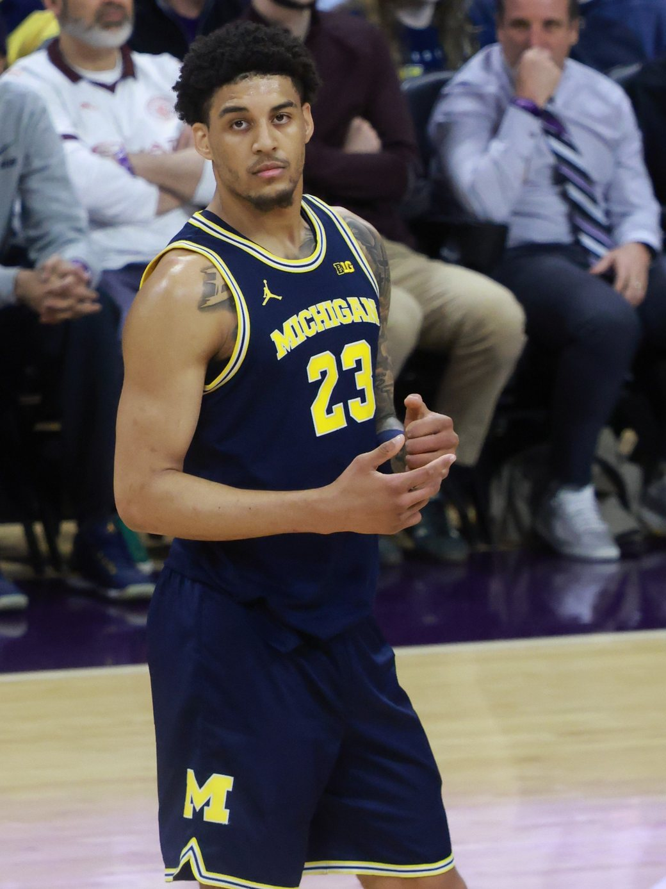
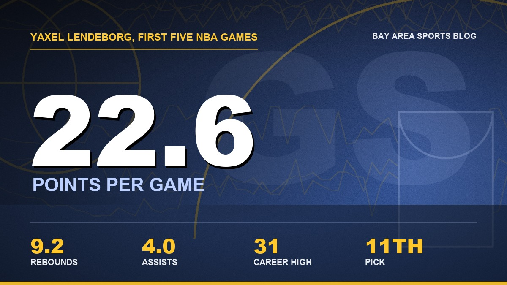

Yaxel Lendeborg Is My Rookie of the Year, and Ten Teams Should Be Sick
Five games in, the eleventh pick looks like the forward Steph has been waiting on.

I'll say it before anybody talks me out of it. Yaxel Lendeborg is my Rookie of the Year favorite. Five games. I know. I don't care.
Last week I wrote that the rookie was the only reason I was still smiling at 0 and 3. That was a smile. This is something else. I was standing in my kitchen Monday night with a plate of leftovers going cold on the counter, watching him walk into Ball Arena and put 31 and 12 on the Nuggets, and at some point I realized I hadn't sat down since the second quarter. My brother texted me one word. "Bro." That's the whole review.
Then Wednesday in Minneapolis he went for 26 and 9 while Steph dropped 44, and the Warriors won again. Two straight. We're 2 and 3, and I feel better about this team than I have since the summer.
Ten teams passed on this guy
Go back to June 23 with me for a second. Barclays Center. Ten picks went before ours. Washington took AJ Dybantsa first, and fine, nobody's mad about that one. Utah took Darryn Peterson. Memphis took Cameron Boozer. Chicago, the Clippers, Brooklyn, Sacramento, Atlanta. Dallas took Morez Johnson Jr. at nine, and Morez was his teammate at Michigan, so the Mavericks literally watched Yaxel's tape while scouting another guy and still went the other way. Milwaukee grabbed Brayden Burries at ten, which was a guy a lot of people figured we wanted.
And then he was just sitting there at eleven.
The knock was the age. He's 24, he turned it on the last day of September, and he took the long road to get here. Arizona Western, a junior college out in Yuma. Then UAB. Then one season at Michigan where all he did was win Big Ten Player of the Year, make consensus first team All-American, and help bring Ann Arbor its first national title since 1989. Teams looked at a super senior and saw a ceiling. I look at him and see a grown man who already knows how to play.
Memphis is the one I keep thinking about. They took Boozer at three, and on October 23 the rookie they passed on put 18 and 13 on them at Chase Center. We lost that game, and I'm still mad about it, but you saw who was crashing the glass.

He's a winner, and the title game proved it
The thing I love most about the Michigan run isn't a stat line. It's that he played the national championship on a bad knee. April 6 in Indianapolis, Michigan and UConn, and he was clearly hurting. He scored four in the first half. Most guys disappear in that spot. He played 36 minutes, scored six of his 13 in the final 5:44, and Michigan won it 69 to 63. Elliot Cadeau got the Most Outstanding Player trophy and earned it. But I watched that finish, and I remember thinking whoever drafts the big guy who can't run right now and still wants the ball is getting something you can't coach.
That's who showed up in Denver.
Monday night in Denver
Steph had three points at halftime. Three. In the old days that's a loss and a long flight home. Instead the rookie carried the offense, and Steph waited, and then Steph finished the night 8 of 8 from the field for 24, which is about as perfect as a shooting night gets. Warriors 134, Nuggets 114. First win of the season.
Lendeborg's line was 31 points, 12 rebounds and 6 assists in 31 minutes, and he was plus 27. He went 12 of 13 at the line. He only made one of his eight threes, which tells you how good the rest of it was. Kerr said after the game that in all the critical moments they just put the ball in his hands, and that for a rookie to be that advanced is extremely rare. Steve Kerr doesn't hand out compliments to rookies like that. I've watched him bury guys on the bench for a missed rotation.

Why he fits next to Steph
For years the dream was a big wing who could catch it on the short roll, make the right read, and punish a defense for sending two at Steph. Draymond was that guy for a decade, and he's still here, but he's 36. Everybody we tried after that was either a shooter who couldn't pass or a passer who couldn't score. Lendeborg is 6 foot 9, 247 pounds, and he does both.
Look at what he's done in five games. He's averaging 22.6 points and 9.2 rebounds. He had six assists in Denver and six against Memphis. He hit six threes in Phoenix. He gets to the free throw line like he's owed money. And the part that matters most for Steph: when a defense loads up on 30, somebody has to make them pay, and this kid makes them pay. Wednesday was the proof. Steph went for 44, Lendeborg chipped in 26, and Minnesota had to pick its poison all night. Warriors 119, Timberwolves 114.
He isn't perfect. He had seven turnovers Wednesday, and six against Memphis, and every one of them made me put my head in my hands. When he drives into three bodies, he hasn't learned yet to give it up early. Fine. He's five games in. The turnovers are fixable. The size, the motor, and the willingness to want the ball when it's close? You can't teach that, and he's already got it.
So yeah, Rookie of the Year
He went into the season as a long shot on the Rookie of the Year boards. Nobody was talking about him next to Dybantsa and Boozer and Peterson. Now look at it. A guy averaging 22.6 and 9 on a team that's actually trying to win games, playing heavy minutes next to a future Hall of Famer, with a 31 point night already in his pocket. Tell me who's been better.
I know I'm a homer. I've been told that by every group chat I've ever been in. I don't care about that either.
I've followed this team through the dynasty and through the last couple of years of watching the front office let Steph's prime tick away, and I wasn't sure I'd get to feel this again. A young guy, a real one, who makes Steph better instead of just standing next to him. The Warriors needed to hit on this pick, and it looks like they did. Somebody in nine other war rooms is rewatching June right now.
Five games. I know.
I'm still not sitting down.
More coverage: Warriors · NBA · Bay Area Sports Blog home